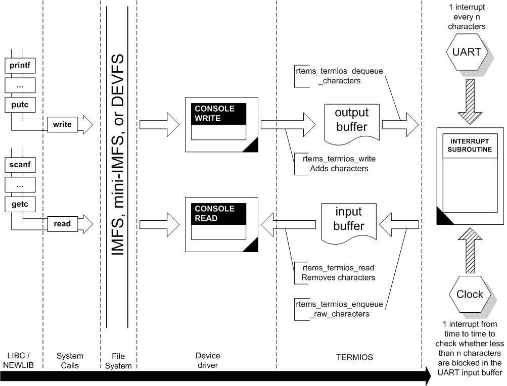

The following Figure shows how a Termios driven serial driver works:

The following list describes the basic flow.
the application programmer uses standard C library call (printf,
scanf, read, write, etc.),
C library (e.g. RedHat (formerly Cygnus) Newlib) calls
the RTEMS system call interface. This code can be found in the
cpukit/libcsupport/src directory.